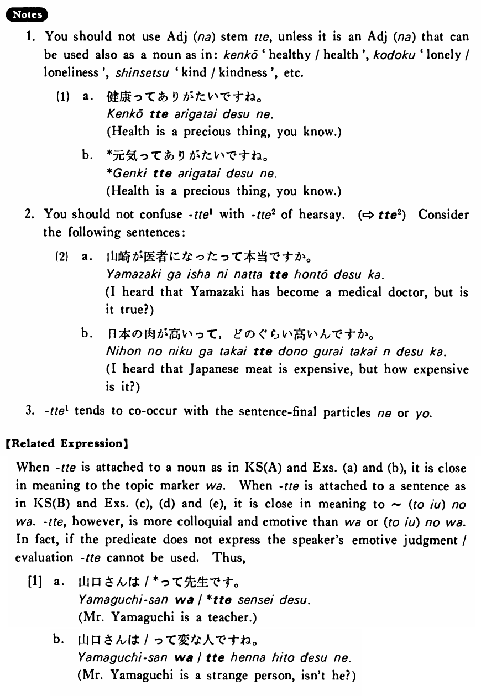

←
DoJG
→
って (1)
(B. 507)
Example sentences
(ksa).
アメリカ人
って
フットボールが好きだ・好きですね。
Speaking of Americans, they love football, don't they?
(ksb).
漢字を覚える
って
大変だ・大変ですね。
To memorize kanji, it's terribly hard, isn't it?
(a).
漢字
って
面白いですよ。
Speaking of kanji, they are interesting, I tell you.
(b).
日本人
って
よく写真を撮りますね。
Speaking of Japanese people, they love taking pictures, don't they?
(c).
外国で暮らす
って
難しいね。
Living in a foreign country is hard, isn't it?
(d).
木が多い
って
いいものだね。
It's good to have many trees, isn't it?
(e).
家が広い
って
いいですね。
It's good to have a spacious house, isn't it?
Formation
Noun
って
先生
って
Speaking of the teacher
{V/Adjective い} informal nonpast
って
話す
って
To talk (topic)
高い
って
To be expensive (topic)
